소방설비기사(기계분야) (2022-03-05 기출문제)
1과목: 소방원론
1. 동식물유류에서 “요오드값이 크다”라는 의미를 옳게 설명한 것은?
- 불포화도가 높다.
- 불건성유이다.
- 자연발화성이 낮다.
- 산소와의 결합이 어렵다.
(정답률: 77%)

2. 화재에 관련된 국제적인 규정을 제정하는 단체는?
- IMO(International Maritime Organization)
- SFPE(Society of Fire Protection Engineers)
- NFPA(Nation Fire Protection Association)
- ISO(International Organization for Standardization) TC 92
(정답률: 69%)
3. 위험물의 유별에 따른 분류가 잘못된 것은?
- 제1류 위험물: 산화성 고체
- 제3류 위험물: 자연발화성 물질 및 금수성 물질
- 제4류 위험물: 인화성 액체
- 제6류 위험물: 가연성 액체
(정답률: 76%)
4. 상온·상압의 공기중에서 탄화수소류의 가연물을 소화하기 위한 이산화탄소 소화약제의 농도는 약 몇 % 인가? (단, 탄화수소류는 산소농도가 10%일 때 소화된다고 가정한다.)
- 28.57
- 35.48
- 49.56
- 52.38
(정답률: 50%)
5. 제연설비의 화재안전기준상 예상제연구역에 공기가 유입되는 순간의 풍속은 몇 m/s 이하가 되도록 하여야 하는가?
- 2
- 3
- 4
- 5
(정답률: 54%)
6. 상온에서 무색의 기체로서 암모니아와 유사한 냄새를 가지는 물질은?
- 에틸벤젠
- 에틸아민
- 산화프로필렌
- 사이클로프로판
(정답률: 47%)
7. 소화약제의 형식승인 및 제품검사의 기술기준상 강화액 소화약제의 응고점은 몇 ℃ 이하이어야 하는가?
- 0
- -20
- -25
- -30
(정답률: 62%)
8. 소화원리에 대한 설명으로 틀린 것은?
- 억제소화: 불활성기체를 방출하여 연소범위 이하로 낮추어 소화하는 방법
- 냉각소화: 물의 증발잠열을 이용하여 가연물의 온도를 낮추는 소화방법
- 제거소화: 가연성 가스의 분출화재 시 연료공급을 차단시키는 소화방법
- 질식소화: 포소화약제 또는 불연성기체를 이용해서 공기 중의 산소공급을 차단하여 소화하는 방법
(정답률: 57%)
9. 단백포 소화약제의 특징이 아닌 것은?
- 내열성이 우수하다.
- 유류에 대한 유동성 이 나쁘다.
- 유류를 오염시킬 수 있다.
- 변질의 우려가 없어 저장 유효기간의 제한이 없다.
(정답률: 60%)
10. 고층 건축물 내 연기거동 중 굴뚝효과에 영향을 미치는 요소가 아닌 것은?
- 건물 내·외의 온도차
- 화재실의 온도
- 건물의 높이
- 층의 면적
(정답률: 58%)
11. 전기불꽃, 아크 등이 발생하는 부분을 기름 속에 넣어 폭발을 방지하는 방폭구조는?
- 내압방폭구조
- 유입방폭구조
- 안전증방폭구조
- 특수방폭구조
(정답률: 71%)
12. 건축물의 피난·방화구조 등의 기준에 관한 규칙상 방화구획의 설치기준 중 스프링클러를 설치한 10층 이하의 층은 바닥면적 몇 m2 이내마다 방화구획을 구획하여야 하는가?
- 1000
- 1500
- 2000
- 3000
(정답률: 60%)
13. 과산화수소 위험물의 특성이 아닌 것은?
- 비수용성이다.
- 무기화합물이다.
- 불연성 물질이다.
- 비중은 물보다 무겁다.
(정답률: 32%)
14. 이산화탄소 소화약제의 임계온도는 약 몇 ℃ 인가?
- 24.4
- 31.4
- 56.4
- 78.4
(정답률: 66%)
15. 이산화탄소 소화약제의 주된 소화효과는?
- 제거소화
- 억제소화
- 질식소화
- 냉각소화
(정답률: 73%)
16. 백열전구가 발열하는 원인이 되는 열은?
- 아크열
- 유도열
- 저항열
- 정전기열
(정답률: 60%)
17. 화재의 정의로 옳은 것은?
- 가연성물질과 산소와의 격렬한 산화반응이다.
- 사람의 과실로 인한 실화나 고의에 의한 방화로 발생하는 연소현상으로서 소화할 필요성이 있는 연소현상이다.
- 가연물과 공기와의 혼합물이 어떤 점화원에 의하여 활성화되어 열과 빛을 발하면서 일으키는 격렬한 발열반응이다.
- 인류의 문화와 문명의 발달을 가져오게 한 근본 존재로서 인간의 제어수단에 의하여 컨트롤 할 수 있는 연소현상이다.
(정답률: 56%)
18. 물에 황산을 넣어 묽은 황산을 만들 때 발생되는 열은?
- 연소열
- 분해열
- 용해열
- 자연발열
(정답률: 59%)
19. 자연발화의 방지방법이 아닌 것은?
- 통풍이 잘 되도록 한다.
- 퇴적 및 수납 시 열이 쌓이지 않게 한다.
- 높은 습도를 유지한다.
- 저장실의 온도를 낮게 한다.
(정답률: 73%)
20. 다음 중 분진 폭발의 위험성이 가장 낮은 것은?
- 시멘트가루
- 알루미늄분
- 석탄분말
- 밀가루
(정답률: 66%)
2과목: 소방유체역학
21. 30℃에서 부피가 10L인 이상기체를 일정한 압력으로 0℃로 냉각시키면 부피는 약 몇 L로 변하는가?
- 3
- 9
- 12
- 18
(정답률: 48%)
22. 비중이 0.6이고 길이 20m, 폭 10m, 높이 3m인 직육면체 모양의 소방정 위에 비중이 0.9인 포소화약제 5톤을 실었다. 바닷물의 비중이 1.03일 때 바닷물 속에 잠긴 소방정의 깊이는 몇 m인가
- 3.54
- 2.5
- 1.77
- 0.6
(정답률: 31%)
23. 그림과 같이 대기압 상태에서 V의 균열한 속도로 분출된 직경 D의 원형 물제트가 원판에 충돌할 때 원판이 U의 속도로 오른쪽으로 계속 동일한 속도로 이동하려면 외부에서 원판에 가해야 하는 힘 F는? (단, ρ는 물의 밀도, g는 중력가속도이다.)
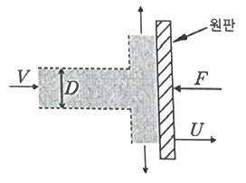
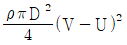
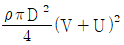
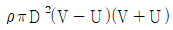
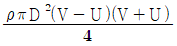
(정답률: 47%)
24. 그림과 같이 폭이 넓은 두 평판 사이를 흐르는 유체의 속도 분포 u(y)가 다음과 같을 때, 평판 벽에 작용하는 전단응력은 약 몇 Pa인가? (단, um = 1m/s, h = 0.01m, 유체의 점성계수는 0.1 N·s/m2이다.)
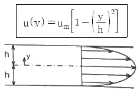
- 1
- 2
- 10
- 20
(정답률: 27%)
25. -15℃의 얼음 10g을 100℃의 증기로 만드는데 필요한 열량은 약 몇 kJ인가? (단, 얼음의 융해열은 335kJ/kg, 물의 증발잠열은 2256kJ/kg, 얼음의 평균 비열은 2.1kJ/kg·K이고, 물의 평균 비열은 4.18kJ/kg·K이다.
- 7.85
- 27.1
- 30.4
- 35.2
(정답률: 25%)
26. 포화액-증기 혼합물 300g이 100kPA의 일정한 압력에서 기화가 일어나서 건도가 10%에서 30%로 높아진다면 혼합물의 체적 증가량은 약 몇 m3인가? (단, 100kPa에서 포화액과 포화증기의 비체적은 각각 0.00104m3/kg 과 1.694 m3/kg 이다.)
- 3.386
- 1.693
- 0.508
- 0.102
(정답률: 17%)
27. 비중량 및 비중에 대한 설명으로 옳은 것은?
- 비중량은 단위부피당 유체의 질량이다.
- 비중은 유체의 질량 대 표준상태 유체의 질량비이다.
- 기체인 수소의 비중은 액체인 수은의 비중보다 크다.
- 압력의 변화에 대한 액체의 비중량 변화는 기체 비중량 변화보다 작다.
(정답률: 31%)
28. 물분무 소화설비의 가압송수장치로 전동기 구동형 펌프를 사용하였다. 펌프의 토출량 800L/min, 전양정 50m, 효율 0.65, 전달계수 1.1인 경우 적당한 전동기 용량은 몇 kW인가?
- 4.2
- 4.7
- 10.0
- 11.1
(정답률: 46%)
29. 수평원관 속을 층류상태로 흐르는 경우 유량에 대한 설명으로 틀린 것은?
- 점성계수에 반비례한다.
- 관의 길이에 반비례한다.
- 관 지름의 4제곱에 비례한다.
- 압력강하량에 반비례한다.
(정답률: 33%)
30. 부차적 손실계수 K가 2인 관 부속품에서의 손실 수두가 2m이라면 이때의 유속은 약 몇 m/s 인가?
- 4.43
- 3.14
- 2.21
- 2.00
(정답률: 36%)
31. 관내에 흐르는 유체의 흐름을 구분하는 데 사용되는 레이놀즈 수의 물리적인 의미는?
- 관성력/중력
- 관성력/점성력
- 관성력/탄성력
- 관성력/압축력
(정답률: 59%)
32. 그림과 같은 U자관 차압액주계에서 γ1 = 9.8kN/m3, γ2 = 133kN/m3, γ3 = 9.0kN/m3, h1 = 0.2m, h3 = 0.1이고 압력차 pA - pB = 30kPA이다. h2는 몇 m 인가?
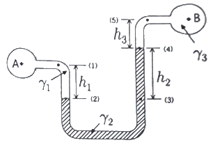
- 0.218
- 0.226
- 0.234
- 0.247
(정답률: 34%)
33. 펌프와 관련된 용어의 설명으로 옳은 것은?
- 캐비테이션 : 송출압력과 송출유량이 주기적으로 변하는 현상
- 서징 : 액체가 포화 증기압 이하에서 비등하여 기포가 발생하는 현상
- 수격작용 : 관을 흐르던 물이 갑자기 정지할 때 압력파에 의해 이상음(異常音)이 발생하는 현상
- NPSH : 펌프에서 상사법칙을 나타내기 위한 비속도
(정답률: 50%)
34. 베르누이의 정리(
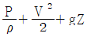
= constant)가 적용되는 조건이 아닌 것은?- 압축성의 흐름이다.
- 정상 상태의 흐름이다.
- 마찰이 없는 흐름이다.
- 베르누이 정리가 적용되는 임의의 두 점은 같은 유선 상에 있다.
(정답률: 47%)
35. 그림과 같이 수평과 30˚ 경사된 폭 50cm인 수문 AB가 A점에서 힌지(hinge)로 되어있다. 이 문을 열기 위한 최소한의 힘 F(수문에 직각 방향)는 약 몇 kN인가? (단, 수문의 무게는 무시하고, 유체의 비중은 1이다.)
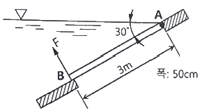
- 11.5
- 7.35
- 5.51
- 2.71
(정답률: 32%)
36. 성능이 같은 3대의 펌프를 병렬로 연결하였을 경우 양정과 유량은 얼마인가? (단, 펌프 1대의 유량은 Q, 양정은 H이다.)
- 유량은 3Q, 양정은 H
- 유량은 3Q, 양정은 3H
- 유량은 9Q, 양정은 H
- 유량은 9Q, 양정은 3H
(정답률: 51%)
37. 수평 배관 설비에서 상류 지점인 A지점의 배관을 조사해 보니 지름 100mm, 압력 0.45MPa, 평균 유속 1m/s이었다. 또, 하류의 B지점을 조사해 보니 지름 50mm, 압력 0.4MPa이었다면 두 지점 사이의 손실 수두는 약 몇 m인가? (단, 배관 내 유체의 비중은 1이다.)
- 4.34
- 4.95
- 5.87
- 8.67
(정답률: 27%)
38. 원관 속을 층류상태로 흐르는 유체의 속도분포가 다음과 같을 때 관벽에서 30mm 떨어진 곳에서 유체의 속도기울기(속도구배)는 약 몇 s-1인가?
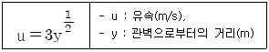
- 0.87
- 2.74
- 8.66
- 27.4
(정답률: 26%)
39. 대기의 압력이 106kPa이라면 게이지 압력이 1226 kPa인 용기에서 절대압력은 몇 kPa인가?
- 1120
- 1125
- 1327
- 1332
(정답률: 54%)
40. 표면온도 15℃, 방사율 0.85인 40cm×50cm 직사각형 나무판의 한쪽 면으로부터 방사되는 복사열은 약 몇 W인가? (단 스테판-볼츠만 상수는 5.67×10-8 W/m2·K4이다.)
- 12
- 66
- 78
- 521
(정답률: 26%)
3과목: 소방관계법규
41. 소방시설공사업법령상 소방시설업의 감독을 위하여 필요할 때에 소방시설업자나 관계인에게 필요한 보고나 자료 제출을 명할수 있는 사람이 아닌 것은?
- 시·도지사
- 119안전센터장
- 소방서장
- 소방본부장
(정답률: 53%)
42. 소방시설공사업법령상 소방시설업자가 소방시설공사등을 맡긴 특정소방대상물의 관계인에게 지체 없이 그 사실을 알려야 하는 경우가 아닌 것은?
- 소방시설업자의 지위를 승계한 경우
- 소방시설업의 등록취소처분 또는 영업정지처분을 받은 경우
- 휴업하거나 폐업한 경우
- 소방시설업의 주소지가 변경된 경우
(정답률: 56%)
43. 소방기본법령상 이웃하는 다른 시·도지사와 소방업무에 관하여 시·도지사가 체결할 상호응원협정 사항이 아닌 것은?
- 화재조사활동
- 응원출동의 요청방법
- 소방교육 및 응원출동훈련
- 응원출동대상지역 및 규모
(정답률: 44%)
44. 화재예방, 소방시설 설치·유지 및 안전관리에 관한 법령상 소방시설의 종류에 대한 설명으로 옳은 것은?
- 소화기구, 옥외소화전설비는 소화설비에 해당된다.
- 유도등, 비상조명등은 경보설비에 해당된다.
- 소화수조, 저수조는 소화활동설비에 해당된다.
- 연결송수관설비는 소화용수설비에 해당된다.
(정답률: 51%)
45. 화재예방, 소방시설 설치·유지 및 안전관리에 관한 법령상 특정소방대상물의 소방시설 설치의 면제기준에 따라 연결살수설비를 설치면제 받을 수 있는 경우는?
- 송수구를 부설한 간이스프링클러설비를 설치하였을 때
- 송수구를 부설한 옥내소화전설비를 설치하였을 때
- 송수구를 부설한 옥외소화전설비를 설치하였을 때
- 송수구를 부설한 연결송수관설비를 설치하였을 때
(정답률: 41%)
46. 위험물안전관리법령상 위험물 및 지정수량에 대한 기준 중 다음 ( ) 안에 알맞은 것은?
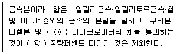
- ㉠ 150, ㉡ 50
- ㉠ 53, ㉡ 50
- ㉠ 50, ㉡ 150
- ㉠ 50, ㉡ 53
(정답률: 49%)
47. 위험물안전관리법령상 제조소등의 관계인은 위험물의 안전관리에 관한 직무를 수행하게 하기 위하여 제조소등마다 위험물의 취급에 관한 자격이 있는 자를 위험물안전관리자로 선임하여야 한다. 이 경우 제조소등의 관계인이 지켜야 할 기준으로 틀린 것은?
- 제조소등의 관계인은 안전관리자를 해임하거나 안전관리자가 퇴직한 때에는 해임하거나 퇴직한 날부터 15일 이내에 다시 안전관리자를 선임하여야 한다.
- 제조소등의 관계인이 안전관리자를 선임한 경우에는 선임한 날부터 14일 이내에 소방본부장 또는 소방서장에게 신고하여야한다.
- 제조소등의 관계인은 안전관리자가 여행·질병 그 밖의 사유로 인하여 일시적으로 직무를 수행할 수 없는 경우에는 국가기술자격법에 따른 위험물의 취급에 관한 자격취득자 또는 위험물안전에 관한 기본지식과 경험이 있는 자를 대리자로 지정하여 그 직무를 대행하게 하여야한다. 이 경우 대행하는 기간은 30일을 초과할 수 없다.
- 안전관리자는 위험물을 취급하는 작업을 하는 때에는 작업자에게 안전관리에 관한 필요한 지시를 하는 등 위험물의 취급에 관한 안전관리와 감독을 하여야 하고, 제조소등의 관계인은 안전관리자의 위험물안전관리에 관한 의견을 존중하고 그 권고에 따라야 한다.
(정답률: 61%)
48. 소방시설공사업법령상 감리업자는 소방시설공사가 설계도서 또는 화재안전기준에 적합하지 아니한 때에는 가장 먼저 누구에게 알려야 하는가?
- 감리업체 대표자
- 시공자
- 관계인
- 소방서장
(정답률: 38%)
49. 화재예방, 소방시설 설치·유지 및 안전관리에 관한 법령에 따라 2급 소방안전관리대상물의 소방안전관리자 선임 기준으로 틀린 것은?
- 전기공사산업기사 자격을 가진 사람
- 소방공무원으로 3년 이상 근무한 경력이 있는 사람
- 의용소방대원으로 5년 이상 근무한 경력이 있는 사람
- 위험물산업기사 자격을 가진 사람
(정답률: 40%)
50. 위험물안전관리 법령상 옥내주유취급소에 있어서 당해 사무소 등의 출입구 및 피난구와 당해 피난구로 통하는 통로·계단 및 출입구에 설치해야 하는 피난설비는?
- 유도등
- 구조대
- 피난사다리
- 완강기
(정답률: 59%)
51. 소방시설공사업법령상 소방시설업 등록의 결격사유에 해당되지 않는 법인은?
- 법인의 대표자가 피성년후견인인 경우
- 법인의 임원이 피성년후견인인 경우
- 법인의 대표자가 소방시설공사업법에 따라 소방시설업 등록이 취소된 지 2년이 지나지 아니한 자인 경우
- 법인의 임원이 소방시설공사업법에 따라 소방시설업 등록이 취소된 지 2년이 지나지 아니한 자인 경우
(정답률: 45%)
52. 소방기본법령상 화재가 발생할 우려가 높거나 화재가 발생하는 경우 그로 인하여 피해가 클 것으로 예상되는 지역을 화재경계지구로 지정할 수 있는 자는?
- 한국소방안전협회장
- 소방시설관리사
- 소방본부장
- 시·도지사
(정답률: 58%)
53. 화재예방, 소방시설 설치·유지 및 안전관리에 관한 법령상 건축허가등을 할 때 미리 소방본부장 또는 소방서장의 동의를 받아야 하는 건축물 등의 범위가 아닌 것은?
- 연면적 200m2 이상인 노유자시설 및 수련시설
- 항공기격납고, 관망탑
- 차고·주차장으로 사용되는 바닥면적이 100m2 이상인 층이 있는 건축물
- 지하층 또는 무창층이 있는 건축물로서 바닥면적이 150m2 이상인 층이 있는 것
(정답률: 46%)
54. 화재예방, 소방시설 설치·유지 및 안전관리에 관한 법령상 특정소방대상물의 수용인원 산정방법으로 옳은 것은?
- 침대가 없는 숙박시설은 해당 특정소방대상물의 종사자의 수에 숙박시설의 바닥면적의 합계를 4.6m2로 나누어 얻은 수를 합한 수로 한다.
- 강의실로 쓰이는 특정소방대상물은 해당용도로 사용하는 바닥면적의 합계를 4.6m2로 나누어 얻은 수로 한다.
- 관람석이 없을 경우 강당, 문화 및 집회시설, 운동시설, 종교시설은 해당용도로 사용하는 바닥면적의 합계를 4.6m2로 나누어 얻은 수로 한다.
- 백화점은 해당 용도로 사용하는 바닥면적의 합계를 4.6m2로 나누어 얻은 수로 한다.
(정답률: 42%)
55. 소방기본법령상 일반음식점에서 음식조리를 위해 불을 사용하는 설비를 설치하는 경우 지켜야 하는 사항으로 틀린 것은?
- 주방시설에는 동물 또는 식물의 기름을 제거할 수 있는 필터 등을 설치할 것
- 열을 발생하는 조리기구는 반자 또는 선반으로부터 0.6미터 이상 떨어지게 할 것
- 주방설비에 부속된 배출덕트는 0.2밀리미터 이상의 아연도금강판으로 설치할 것
- 열을 발생하는 조리기구로부터 0.15미터이내의 거리에 있는 가연성 주요구조부는 석면판 또는 단열성이 있는 불연재료로 덮어 씌울 것
(정답률: 46%)
56. 소방기본법령상 소방업무의 응원에 대한 설명 중 틀린 것은?
- 소방본부장이나 소방서장은 소방활동을 할 때에 긴급한 경우에는 이웃한 소방본부장 또는소방서장에게 소방업무의 응원을 요청할 수 있다.
- 소방업무의 응원 요청을 받은 소방본부장 또는 소방서장은 정당한 사유 없이 그 요청을 거절하여서는 아니 된다.
- 소방업무의 응원을 위하여 파견된 소방대원은 응원을 요청한 소방본부장 또는 소방서장의 지휘에 따라야 한다.
- 시·도지사는 소방업무의 응원을 요청하는 경우를 대비하여 출동 대상지역 및 규모와 필요한 경비의 부담 등에 관하여 필요한 사항을 대통령령으로 정하는 바에 따라 이웃하는 시·도지사와 협의하여 미리 규약으로 정하여야 한다.
(정답률: 59%)
57. 소방시설공사업 법령상 소방공사감리업을 등록한 자가 수행하여야 할 업무가 아닌 것은?
- 완공된 소방시설등의 성능시험
- 소방시설등 설계 변경 사항의 적합성 검토
- 소방시설등의 설치계획표의 적법성 검토
- 소방용품 형식승인 및 제품검사의 기술기준에 대한 적합성 검토
(정답률: 50%)
58. 소방시설공사업법령상 소방시설업에 대한 행정처분기준에서 1차 행정처분 사항으로 등록취소에 해당하는 것은?
- 거짓이나 그 밖의 부정한 방법으로 등록한 경우
- 소방시설업자의 지위를 승계한 사실을 소방시설공사등을 맡긴 특정소방대상물의 관계인에게 통지를 하지 아니한 경우
- 화재안전기준 등에 적합하게 설계·시공을 하지 아니하거나, 법에 따라 적합하게 감리를 하지 아니한 경우
- 등록을 한 후 정당한 사유 없이 1년이 지날 때까지 영업을 시작하지 아니하거나 계속하여 1년 이상 휴업한 때
(정답률: 56%)
59. 다음 중 소방기본법령상 한국소방안전원의 업무가 아닌 것은?
- 소방기술과 안전관리에 관한 교육 및 조사·연구
- 위험물탱크 성능시험
- 소방기술과 안전관리에 관한 각종 간행물 발간
- 화재 예방과 안전관리의식 고취를 위한 대국민 홍보
(정답률: 60%)
60. 위험물안전관리법령상 제조소등이 아닌 장소에서 지정수량 이상의 위험물 취급에 대한 설명으로 틀린 것은?
- 임시로 저장 또는 취급하는 장소에서의 저장 또는 취급의 기준은 시·도의 조례로 정한다.
- 필요한 승인을 받아 지정수량 이상의 위험물을 120일 이내의 기간 동안 임시로 저장 또는 취급하는 경우 제조소 등이 아닌 장소에서 지정수량 이상의 위험물을 취급할 수 있다.
- 제조소등이 아닌 장소에서 지정수량 이상의 위험물을 취급할 경우 관할소방서장의 승인을 받아야 한다.
- 군부대가 지정수량 이상의 위험물을 군사목적으로 임시로 저장 또는 취급하는 경우 제조소등이 아닌 장소에서 지정수량이상의 위험물을 취급할 수 있다.
(정답률: 54%)
4과목: 소방기계시설의 구조 및 원리
61. 소화기구 및 자동소화장치의 화재안전기준상 대형소화기의 정의 중 다음 ( )안에 알맞은 것은?
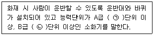
- ㉠ 20, ㉡ 10
- ㉠ 10, ㉡ 20
- ㉠ 10, ㉡ 5
- ㉠ 5, ㉡ 10
(정답률: 58%)
62. 분말소화설비의 화재안전기준상 분말소화약제의 가압용가스 또는 축압용가스의 설치 기준으로 틀린 것은?
- 가압용가스에 질소가를 사용하는 것의 질소가스는 소화약제 1kg마다 40L(35℃에서 1기압의 압력상태로 환산한 것) 이상으로 할 것
- 가압용가스에 이산화탄소를 사용하는 것의 이산화타소는 소화약제 1kg에 대하여 20g에 배관의 청소에 필요한 양을 가산한 양 이상으로 할 것
- 축압용가스에 질소가스를 사용하는 것의 질소가스는 소화약제 1kg에 대하여 40L(35℃에서 1기압의 압력상태로 환산한 것) 이상으로 할 것
- 축압용가스에 이산화탄소를 사용하는 것의 이산화타소는 소화약제 1kg에 대하여 20g에 배관의 청소에 필요한 양을 가산한 양 이상으로 할 것
(정답률: 47%)
63. 포소화설비의 화재안전기준상 포소화설비의 자동식 기동장치에 화재감지기를 사용하는 경우, 화재감지기 회로의 발신기 설치 기준 중 ( )안에 알맞은 것은? (단, 자동화재탐지설비의 수신기가 설치된 장소에 상시 사람이 근무하고 있고, 화재 시 즉시 해당 조작부를 작동시킬 수있는 경우는 제외한다.)
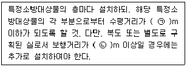
- ㉠ 25, ㉡ 30
- ㉠ 25, ㉡ 40
- ㉠ 15, ㉡ 30
- ㉠ 15, ㉡ 40
(정답률: 50%)
64. 특별피난계단의 계단실 및 부속실 제연설비의 화재안전기준상 급기풍도 단면의 긴변 길이가 1300mm인 경우, 강판의 두께는 최소 몇 mm 이상이어야 하는가?
- 0.6
- 0.8
- 1.0
- 1.2
(정답률: 39%)
65. 옥외소화전설비의 화재안전기준상 옥외소화전설비에서 성능시험배관의 직관부에 설치된 유량측정장치는 펌프 및 정격토출량의 최소 몇 % 이상 측정할 수 있는 성능이 있어야 하는가?
- 175
- 150
- 75
- 50
(정답률: 45%)
66. 할론소화설비의 화재안전기기준상 자동차차고나 주차장에 할론 1301 소화약제로 전역방출방식의 소화설비를 설치한 경우 방호구역의 체적 1m3당 얼마의 소화약제가 필요한가?
- 0.32kg 이상 0.64kg 이하
- 0.36kg 이상 0.71kg 이하
- 0.40kg 이상 1.10kg 이하
- 0.60kg 이상 0.71kg 이하
(정답률: 46%)
67. 소화기구 및 자동소화장치의 화재안전기준상 타고 나서 재가 남는 일반화재에 해당하는 일반 가연물은?
- 고무
- 타르
- 솔벤트
- 유성도료
(정답률: 53%)
68. 특별피난계단의 계단실 및 부속실 제연설비의 화재안전기준상 차압 등에 관한 기준으로 옳은 것은?
- 제연설비가 가동되었을 경우 출입문의 개방에 필요한 힘은 150N 이하로 하여야 한다.
- 제연구역과 옥내와의 사이에 유지하여야 하는 최소차압은 옥내에 스프링클러설비가 설치된 경우에는 40Pa 이상으로 하여야 한다.
- 계단실과 부속실을 동시에 제연하는 경우 부속실의 기압은 계단실과 같게 하거나 계단실의 기압보다 낮게 할 경우에는 부속실과 계단실의 압력차이는 3Pa 이하가 되도록 하여야 한다.
- 피난을 위하여 제연구역의 출입문이 일시적으로 개방되는 경우 개방되지 아니하는 제연구역과 옥내와의 차압은 기준에 따른 차압은 기준에 따른 차압의 70% 미만이 되어서는 아니 된다.
(정답률: 34%)
69. 스프링클러설비의 화재안전기준상 고가수조를 이용한 가압송수장치의 설치기준 중 고가수조에 설치하지 않아도 되는 것은?
- 수위계
- 배수관
- 압력계
- 오버플로우관
(정답률: 54%)
70. 상수도소화용수설비의 화재안전기준상 소화전은 특정소방대상물의 수평투영면의 각 부분으로부터 최대 몇 m 이하가 되도록 설치하여야 하는가?
- 100
- 120
- 140
- 150
(정답률: 57%)
71. 상수도소화용수설비의 화재안전기준상 상수도소화용수설비 소화전의 설치 기준 중 다음 ( ) 안에 알맞은 것은?
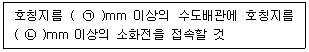
- ㉠ 65, ㉡ 120
- ㉠ 75, ㉡ 100
- ㉠ 80, ㉡ 90
- ㉠ 100, ㉡ 100
(정답률: 61%)
72. 구조대의 형식승인 및 제품검사의 기술기준상 경사하강식 구조대의 구조 기준으로 틀린것은
- 연속하여 활강할 수 있는 구조로 안전하고 쉽게 사용할 수 있어야 한다.
- 구조대 본체는 강하방향으로 봉합부가 설치되지 아니하여야 한다.
- 입구틀 및 취부틀의 입구는 지름 40cm 이상의 구체가 통할 수 있어야 한다.
- 본체의 포지는 하부지지장치에 인장력이 균등하게 걸리도록 부착하여야 하며 하부지지장치는 쉽게 조작할 수 있어야 한다.
(정답률: 54%)
73. 분말소화설비의 화재안전기준상 차고 또는 주차장에 설치하는 분말소화설비의 소화약제는?
- 제1종 분말
- 제2종 분말
- 제3종 분말
- 제4종 분말
(정답률: 57%)
74. 피난사다리의 형식승인 및 제품검사의 기술기준상 피난사다리의 일반구조 기준으로 옳은 것은?
- 피난사다리는 2개 이상의 횡봉으로 구성되어야 한다. 다만, 고정식사다리인 경우에는 횡봉의 수를 1개로 할 수 있다.
- 피난사다리(종봉이 1개인 고정식사다리는 제외)의 종봉의 간격은 최외각 종봉 사이의 안치수가 15cm 이상이어야 한다.
- 피난사다리의 횡봉은 지름 15mm 이상 25mm 이하의 원형인 단면이거나 또는 이와 비슷한 손으로 잡을 수 있는 형태의 단면이 있는 것이어야 한다.
- 피난사다리의 횡봉은 종봉에 동일한 간격으로 부착한 것이어야 하며, 그 간격은 25cm 이상 35cm 이하이어야 한다.
(정답률: 34%)
75. 간이스프링클러설비의 화재안전기준상 간이스프링클러설비의 배관 및 밸브 등의 설치순서로 맞는 것은? (단, 수원이 펌프보다 낮은 경우이다.)
- 상수도직결형은 수도용계량기, 급수차단장치, 개폐표시형밸브, 체크밸브, 압력계, 유수검지장치, 2개의 시험밸브 순으로 설치할 것
- 펌프 설치 시에는 수원, 연성계 또는 진공계, 펌프 또는 압력수조, 압력계, 체크밸브, 개폐표시형밸브, 유수검지장치, 2개의 시험밸브 순으로 설치할 것
- 가압수조 이용 시에는 수원, 가압수조, 압력계, 체크밸브, 개폐표시형밸브, 유수검지장치, 1개의 시험밸브 순으로 설치할 것
- 캐비닛형인 경우 수원, 펌프 또는 압력수조, 압력계, 체크밸브, 연성계 또는 진공계, 개폐표시형밸브 순으로 설치할 것
(정답률: 35%)
76. 스프링클러설비의 화재안전기준상 스프링클러헤드 설치 시 살수가 방해되지 아니하도록 벽과 스프링클러헤드간의 공간은 최소 몇 cm 이상으로 하여야 하는가?
- 60
- 30
- 20
- 10
(정답률: 36%)
77. 물분무소화설비의 화재안전기준상 차고 또는 주차장에 설치하는 물분무소화설비의 배수설비 기준으로 틀린 것은?
- 차량이 주차하는 바닥은 배수구를 향하여 100분의 2 이상의 기울기를 유지할 것
- 차량이 주차하는 장소의 적당한 곳에 높이 5cm 이상의 경계턱으로 배수구를 설치할 것
- 배수설비는 가압송수장치의 최대송수능력의 수량을 유효하게 배수할 수 있는 크기 및 기울기로 할 것
- 배수구에는 새어나온 기름을 모아 소화할 수 있도록 길이 40m 이하마다 집수관·소화핏트 등 기름분리장치를 설치할 것
(정답률: 54%)
78. 미분무소화설비의 화재안전기준상 용어의 정의 중 다음 ( ) 안에 알맞은 것은?
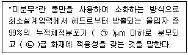
- ㉠ 400, ㉡ A,B,C
- ㉠ 400, ㉡ B,C
- ㉠ 200, ㉡ A,B,C
- ㉠ 200, ㉡ B,C
(정답률: 57%)
79. 포소화설비의 화재안전기준상 포소화설비의 자동식 기동장치에 폐쇄형 스프링클러헤드를 사용하는 경우에 대한 설치 기준 중 다음 ( ) 안에 알맞은 것은? (단, 자동화재탐지설비의 수신기가 설치된 장소에 상시 사람이 근무하고 있고, 화재 시 즉시 해당 조작부를 작동시킬 수 있는 경우는 제외한다.)
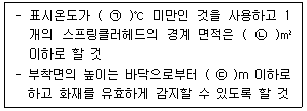
- ㉠ 60, ㉡ 10, ㉢ 7
- ㉠ 60, ㉡ 20, ㉢ 7
- ㉠ 79, ㉡ 10, ㉢ 5
- ㉠ 79, ㉡ 20, ㉢ 5
(정답률: 50%)
80. 할론소화설비의 화재안전기준상 할론소화약제 저장용기의 설치 기준 중 다음 ( ) 안에 알말은 것은?
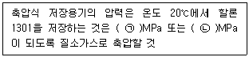
- ㉠ 2.5, ㉡ 4.2
- ㉠ 2.0, ㉡ 3.5
- ㉠ 1.5, ㉡ 3.0
- ㉠ 1.1, ㉡ 2.5
(정답률: 52%)